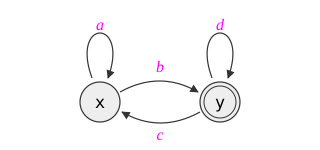

Draft — This article is a work in progress. Content may change.
Semirings are a powerful abstraction for dynamic programming. They provide a useful and elegant abstraction level for
- algorithms for NLP (e.g., Teitelbaum, 1973; Mohri, 1997; Goodman, 1999; Huang, 2008)
- probabilistic inference (e.g., Aji and McEliece, 2000)
- database provenance (e.g., Green et al., 2007)
- network analysis (e.g., Gondran and Minoux, 2008; Baras and Theodorakopoulos, 2010)
- program analysis (e.g., Cousot and Cousot, 1977; Esparza et al., 2010; Dolan, 2013)
Semirings enable the following separation of concerns:
- devising a compact encoding of a set of derivations (e.g., paths in a graph, parses of a sentence), and
- how to evaluate and aggregate the derivations (e.g., the highest-weight derivation, the total weight of all derivations).
Part 1 is specified by the algorithm (e.g., a grammar, a graph, or a dynamic program), and part 2 is given by the choice of semiring. Modularizing by semiring gives different semantics for the same algorithm with the same time and space complexity (assuming semiring operations take unit time), and we can even reuse the implementation.Although certain semirings may allow for additional efficiency shortcuts that others do not, certain implementations may assume properties beyond the basic semiring axioms.
This page is the documentation for the semirings Python library. Every semiring below links to its implementation, and every >>> example on this page is run by the library's test suite, so the page and the code cannot drift apart. Install the library with
pip install git+https://github.com/timvieira/semirings
The text is adapted from the background chapter of my dissertation, and it is background for my series on solving weighted grammars.
Definition
Definition. A semiring $\langle \Values, \oplus, \otimes, \semizero, \semione \rangle$ is a set $\Values$ equipped with two monoid operations $\langle \Values, \oplus, \semizero \rangle$ and $\langle \Values, \otimes, \semione \rangle$ such that the following properties hold:
- $\langle \Values, \oplus, \semizero \rangle$ is a commutative monoid
- $\langle \Values, \otimes, \semione \rangle$ is a monoid
- Distributivity: for all $\va, \vb, \vc \in \Values$, $\;\va \otimes (\vb \oplus \vc) = (\va \otimes \vb) \oplus (\va \otimes \vc)\;$ and $\;(\vb \otimes \va) \oplus (\vc \otimes \va) = (\vb \oplus \vc) \otimes \va$
- Multiplicative annihilation by $\semizero$: for all $\va \in \Values$, $\;\semizero \otimes \va = \va \otimes \semizero = \semizero$
A semiring is commutative if $\otimes$ is commutative, and idempotent if $\oplus$ is idempotent ($\va \oplus \va = \va$).
In the library, a semiring is a Python class with class attributes zero and one and the operators + and * (and, for closed semirings, a star method). check_axioms tests the axioms above on sample values.
The key property of a semiring is distributivity, as it allows us to factor out common subexpressions: we can safely rewrite $(\va \otimes \vb) \oplus (\va \otimes \vc)$ (three operations) into an equivalent smaller expression $\va \otimes (\vb \oplus \vc)$ (two operations). The factored expression can be significantly smaller.
Example. The equations below may be regarded as encoding a weighted directed graph with two states $\mathtt{x}$ and $\mathtt{y}$. The weights in the graph have been left abstract as symbols $\va$, $\vb$, $\vc$, and $\vd$.

$$ \begin{aligned} \mathtt{x} &= \va \otimes \mathtt{x} \oplus \vb \otimes \mathtt{y} \\ \mathtt{y} &= \vc \otimes \mathtt{x} \oplus \vd \otimes \mathtt{y} \oplus \semione \end{aligned} $$
The solution to the system of equations is a map where the value associated with $\mathtt{x}$ is the set of all paths starting in state $\mathtt{x}$ and ending in state $\mathtt{y}$, and the value associated with $\mathtt{y}$ is the set of all paths starting in state $\mathtt{y}$ and ending in state $\mathtt{y}$. In this graph, there are infinitely many paths, and yet, we can express them as a small set of equations. Below we consider replacing the weights ($\va$, $\vb$, $\vc$, $\vd$) with values in a variety of semirings. In each case, we describe the interpretation of the semiring values associated with $\mathtt{x}$ and $\mathtt{y}$.
- $\langle \{\dfalse, \dtrue\}, \vee, \wedge, \dfalse, \dtrue \rangle$ where $\dtrue$ is placed on each edge $\Longrightarrow$ $\mathtt{y}$ is reachable from $\mathtt{x}$, and $\mathtt{y}$ is reachable from $\mathtt{y}$.
- $\langle \mathbb{R}_{\ge 0} \cup \{\infty\}, +, \cdot, 0, 1 \rangle$ $\Longrightarrow$ the total weight of all paths from $\mathtt{x}$ to $\mathtt{y}$ and $\mathtt{y}$ to $\mathtt{y}$.
- $\langle \mathbb{R} \cup \{\infty\}, \min, +, \infty, 0 \rangle$ $\Longrightarrow$ the least-cost path from $\mathtt{x}$ to $\mathtt{y}$ and $\mathtt{y}$ to $\mathtt{y}$.
- $\langle 2^{\Sigma^*}, \cup, \cdot, \emptyset, \{\varepsilon\} \rangle$ where $\Sigma$ is the alphabet $\{a, b, c, d\}$ $\Longrightarrow$ the (regular) formal language that describes the set of paths from $\mathtt{x}$ to $\mathtt{y}$ and from $\mathtt{y}$ to $\mathtt{y}$.
This is just a small example of what we can do by swapping the semiring and keeping the equations essentially the same.
Here is the same example in the library. WeightedGraph builds the graph over any semiring, and its star() sums over all paths (the reflexive, transitive closure), so entry $(\mathtt{x}, \mathtt{y})$ of the closure is the value of $\mathtt{x}$ and entry $(\mathtt{y}, \mathtt{y})$ is the value of $\mathtt{y}$. (With regular-expression weights, the same code returns the languages of paths; see the formal-languages entry below.)
>>> from semirings import WeightedGraph, Float, Boolean, MinPlus
>>> def solve(S, a, b, c, d):
... g = WeightedGraph(S)
... g['x', 'x'] = a; g['x', 'y'] = b; g['y', 'x'] = c; g['y', 'y'] = d
... closure = g.star()
... return closure['x', 'y'], closure['y', 'y']
>>> solve(Boolean, Boolean.one, Boolean.one, Boolean.zero, Boolean.one) # reachability
(True, True)
>>> solve(Float, 0.5, 0.25, 0.25, 0.5) # total weight
(1.3333333333333333, 2.6666666666666665)
>>> x, y = solve(MinPlus, MinPlus(1), MinPlus(3), MinPlus(1), MinPlus(2)) # least cost
>>> x.cost, y.cost
(3, 0.0)
Closed semirings and the star operation
Definition. A closed semiring has an additional operator, called the (Kleene) star operator $\kleene{(\cdot)}$. This operation must satisfy the following axioms for all $\va \in \Values$:
$$ \kleene{\va} = \semione \oplus \va \otimes \kleene{\va} \quad\text{and}\quad \kleene{\va} = \semione \oplus \kleene{\va} \otimes \va $$
We often interpret $\kleene{\va}$ as the solution to the infinite series that arises from unrolling either of its recursive identities:
$$ \kleene{\va} = \bigoplus_{n=0}^\infty \va^n \quad\text{for } \va \in \Values $$
The star operation is useful for solving certain linear equations. For example, $x = \vb \oplus \va \otimes x \oplus \vc \otimes y$ can be rearranged to "solve" for $x$ without subtraction or division: $x = \kleene{\va} \otimes (\vb \oplus \vc \otimes y)$. (Part 2 of the grammar series uses the star of a matrix to solve whole systems of such equations.)
A special family of semirings that always have a star operation is those that are $K$-closed.
Definition. For $K \in \mathbb{N}$, a semiring is $K$-closed if and only ifIt is possible to replace $\forall K'$ with $K' = K+1$; the conditions are equivalent (Mohri, 2002, Lemma 4).
$$ \forall\, \va \in \Values, \forall\, K' > K\colon \quad \bigoplus_{k=0}^{K'} \va^k = \bigoplus_{k=0}^{K} \va^k. $$
Intuitively, $K$-closed semirings imply that we only have to sum contributions of a cycle by iterating around the cycle at most $K$ times; further iterations do not affect the value of the summation. When $K = 0$, the condition simplifies to $\forall\, \va \in \Values\colon \semione \oplus \va = \semione$. Examples of $0$-closed semirings include the boolean, min-plus, and Viterbi semirings. Examples of general $K$-closed semirings include the $(K\!+\!1)$-best semirings (Mohri, 2002, §6) and the $K$-collapsed natural numbers. Non-examples include the arithmetic semirings. Each $K$-closed semiring has a simple expression for its star operation because it is no longer an infinite sum:
$$ \kleene{\va} = \bigoplus_{k=0}^K \va^k \qquad\text{e.g., 0-closed: } \kleene{\va} = \semione, \quad \text{1-closed: } \kleene{\va} = \semione \oplus \va. $$
When a semiring has no closed form for its star, the library's base class provides generic fallbacks (star_approx, star_fixpoint, and star_doubling) that sum the series numerically.
A semiring compendium
Below we list several commonly used semirings and some applications where they appear, along with their star operations and their implementations in the library. We do not have a particular organizing principle for this list, but we hope that it may serve as a useful reference and that it illustrates that semirings can do some surprising things.
Logic
Boolean semiring $\langle \{\dfalse, \dtrue\}, \vee, \wedge, \dfalse, \dtrue \rangle$ is used to test reachability in graphs and, more generally, provability. Its star operation is $\kleene{\dfalse} = \kleene{\dtrue} = \dtrue$. Library: Boolean
>>> from semirings import Boolean
>>> Boolean.zero, Boolean.one
(False, True)
>>> Boolean.zero.star() == Boolean.one.star() == Boolean.one
True
Three-valued logic $\langle \{\dtrue, \dfalse, \dunk\}, \max, \min, \dfalse, \dtrue \rangle$ where $\dfalse < \dunk < \dtrue$.Often $\langle \dfalse, \dunk, \dtrue \rangle$ are encoded as $\langle -1, 0, +1 \rangle$, as in the library. Library: ThreeValuedLogic
>>> from semirings.misc import ThreeValuedLogic as T
>>> T.unk + T.zero == T.unk, T.unk * T.one == T.unk
(True, True)
Fuzzy sets $\langle [0, 1], \max, \min, 0, 1 \rangle$ is related to fuzzy sets (Zadeh, 1965).A fuzzy set extends an ordinary set to support graded membership that indicates the extent to which a given element belongs to a given set ($0$ meaning definitely not in the set, and $1$ meaning definitely in the set). Library: maxmin(0, 1)
>>> from semirings.misc import maxmin
>>> Fuzzy = maxmin(0.0, 1.0)
>>> Fuzzy(0.3) + Fuzzy(0.7) == Fuzzy(0.7), Fuzzy(0.3) * Fuzzy(0.7) == Fuzzy(0.3)
(True, True)
Łukasiewicz semiring $\langle [0,1], \max, \max(0, x + y - 1), 0, 1 \rangle$ (Łukasiewicz, 1920). Library: Lukasiewicz
>>> from semirings.misc import Lukasiewicz as L
>>> L(0.75) * L(0.5) == L(0.25), L(0.75) + L(0.5) == L(0.75)
(True, True)
These semirings are each $0$-closed; thus, their star operations are $\kleene{\va} = \semione$.
Arithmetic semirings
Counting semiring $\langle \mathbb{N}, +, \cdot, 0, 1 \rangle$. As the name suggests, this semiring is used to count things, such as the number of paths between two nodes in a graph. If $\mathbb{N}$ is augmented with $\infty$, then $\kleene{\va} = 1$ if $\va = 0$ and $\infty$ otherwise. Library: Count
>>> from semirings import Count
>>> Count(2) + Count(3), Count(2) * Count(3)
(Count(5), Count(6))
>>> Count(0).star(), Count(2).star()
(Count(1), Count(inf))
Real semiring $\langle \mathbb{R}, +, \cdot, 0, 1 \rangle$. If we extend $\mathbb{R}$ with $\infty$, we have $\kleene{\va} = \frac{1}{1 - \va}$ if $|\va| < 1$, $\infty$ if $\va \ge 1$, and it is undefined if $\va \le -1$. So, unfortunately, this semiring does not have complete support for solving the infinite series. Nonnegative-real semiring $\langle \mathbb{R}_{\ge 0} \cup \{\infty\}, +, \cdot, 0, 1 \rangle$. This semiring is used for computing the normalization constant of a probabilistic model (Goodman, 1999). Its star operation is $\kleene{\va} = \frac{1}{1 - \va}$ for $\va < 1$ and $\infty$ otherwise. Library: Float (values are plain Python floats)
>>> from semirings import Float
>>> Float.zero, Float.one
(0.0, 1.0)
>>> Float.star(0.5), Float.star(1.0)
(2.0, inf)
Log-nonnegative-real semiring $\langle \mathbb{R} \cup \{-\infty, \infty\}, \oplus_{\log}, +, -\infty, 0 \rangle$ where $x \oplus_{\log} y \defeq \log(\exp(x) + \exp(y))$.For speed and numerical precision, the log-space addition operation should not be computed as written; use a library function such as numpy.logaddexp. This semiring is isomorphic to the nonnegative-real semiring; however, it is often preferred as it can avoid certain numerical issues.See also the log-real semiring, which extends it with a sign bit so that negative numbers can be represented. The library's LogVal is signed in this way. Its star operation is $\kleene{\va} = -\log(1 - \exp(\va))$ if $\va < 0$ and $\infty$ otherwise. Library: LogVal
>>> from semirings import LogVal
>>> x = LogVal.lift(0.5) + LogVal.lift(0.25)
>>> round(float(x), 10), round(float(LogVal.lift(0.5).star()), 10)
(0.75, 2.0)
First-order expectation semirings (Eisner, 2002) can be used to compute first-order statistics, such as the expected error rate, the entropy, or the expected feature counts. Elements are pairs $(p, r)$ with $(p_1, r_1) \otimes (p_2, r_2) = (p_1 p_2, p_1 r_2 + p_2 r_1)$. Library: make_expectation(P, R), and the specialized Entropy
>>> from semirings import make_expectation, LogVal
>>> E = make_expectation(LogVal, LogVal)
>>> e = E(LogVal.lift(0.5), LogVal.lift(1.0)).star()
>>> round(float(e.p), 10), round(float(e.r), 10)
(2.0, 4.0)
Second-order expectation semirings (Li and Eisner, 2009) can be used to compute second-order statistics, such as the variance of the error rate, the gradient of entropy, and the covariance matrix of feature counts. Library: SecondOrderExpectation
$K$-collapsed natural numbers $\langle \{0, \ldots, K\}, \min(K, x + y), \min(K, x \cdot y), 0, 1 \rangle$ can be used as guard rails that prevent infinite running times due to counting off to infinity. It is isomorphic to the boolean semiring when $K = 1$. Its star operation is $\kleene{\va} = 1$ if $\va = 0$ and $K$ otherwise. Library: make_count_k(K)
>>> from semirings import make_count_k
>>> C3 = make_count_k(3)
>>> C3(2) + C3(2), C3(2) * C3(2), C3(0).star(), C3(2).star()
(Count[3](3), Count[3](3), Count[3](1), Count[3](3))
Optimization
These semirings are often used when computing the minimum or maximum value over some set, for example, the weighted set of paths in a graph.
Tropical semiring (aka min-plus) $\langle \mathbb{R} \cup \{\infty\}, \min, +, \infty, 0 \rangle$ is used to find the shortest path or cheapest derivation. Its star operation is $\kleene{\va} = 0$ (for $\va \ge 0$). Library: MinPlus
>>> from semirings import MinPlus
>>> MinPlus(3) + MinPlus(5) == MinPlus(3), MinPlus(3) * MinPlus(5) == MinPlus(8)
(True, True)
>>> MinPlus(3).star() == MinPlus.one
True
Arctic semiring (aka max-plus) $\langle \mathbb{R} \cup \{-\infty\}, \max, +, -\infty, 0 \rangle$ is used to find the longest path or highest-weight derivation. Its star operation is $\kleene{\va} = 0$ if $\va \le 0$ and $\infty$ otherwise. Library: MaxPlus
>>> from semirings import MaxPlus
>>> MaxPlus(-1).star() == MaxPlus.one, MaxPlus(2).star() == MaxPlus(float('inf'))
(True, True)
Viterbi semiring (aka max-times) $\langle [0,1], \max, \cdot, 0, 1 \rangle$ is used to find the most probable explanation in a probabilistic model. Its star operation is $\kleene{\va} = 1$. If we broaden the carrier set with numbers $> 1$, we have to extend the definition to $\kleene{\va} = \infty$ for $\va > 1$. Library: MaxTimes
>>> from semirings import MaxTimes
>>> MaxTimes(0.3) + MaxTimes(0.5) == MaxTimes(0.5), MaxTimes(0.5).star() == MaxTimes.one
(True, True)
Min-times semiring $\langle \mathbb{R}_{\ge 0} \cup \{\infty\}, \min, \cdot, \infty, 1 \rangle$ can be used to find the least probable derivation. Its star operation is $\kleene{\va} = \semione \oplus \va = \min(1, \va)$. Library: MinTimes
>>> from semirings import MinTimes
>>> MinTimes(0.5).star() == MinTimes(0.5), MinTimes(3).star() == MinTimes.one
(True, True)
Maximum-capacity semiring $\langle \mathbb{R} \cup \{-\infty, \infty\}, \max, \min, -\infty, \infty \rangle$ can be used to find the maximum-capacity (widest) path in a graph. It is $0$-closed, so $\kleene{\va} = \semione$. Library: Bottleneck (an instance of maxmin)
>>> from semirings.misc import Bottleneck as B
>>> B(3) + B(5) == B(5), B(3) * B(5) == B(3)
(True, True)
These semirings can be augmented with additional bookkeeping to return an argmin/argmax (or even the set of argmins/argmaxes) in addition to the min/max. In the library, the optimization semirings carry an optional backpointer d alongside the value, which equality ignores. It is also possible to make the elements being compared tuples and to compare them under a lexicographic ordering; this is one way to add tie-breaking.
The $K$-best semiring (top-$K$ or bottom-$K$) extends the optimization semirings to provide the $K$-best alternatives, where $K \ge 0$ is a fixed constant.Goodman (1998) gave the $K$-best semiring, which eagerly combines the top-$K$ values; Mohri (2002) independently described $K$-best semirings. Huang and Chiang (2005) generalized this approach to compute the $K$-best list lazily (and without knowledge of $K$), which can be significantly faster. Let $\langle \mathcal{A}, \otimes, \varepsilon \rangle$ be a monoid that is partially ordered under $\preccurlyeq$, with $\otimes$ monotonic. Each element of $\Values$ is a sorted list of at most $K$ elements of $\mathcal{A}$, and
- $A \oplus B \defeq \mathrm{sort}^K(A \cup B)$
- $A \otimes B \defeq \mathrm{sort}^K([\, a \otimes b \mid a \in A,\, b \in B \,])$
- $\semizero \defeq [\,]$ and $\semione \defeq [\varepsilon]$
where $\mathrm{sort}^K$ sorts under $\preccurlyeq$ and truncates to the $K$ smallest elements. This semiring is $(K\!-\!1)$-closed, so we can use the truncated sum $\kleene{\va} = \bigoplus_{k=0}^{K-1} \va^k$. Library: the lazy version, LazySort, which enumerates derivations best-first without fixing $K$ (variants via make_lazysort_semiring)
>>> from semirings import LazySort
>>> list(LazySort(0.5, 'a') + LazySort(0.3, 'b'))
[(0.5, 'a'), (0.3, 'b')]
Formal languages and weighted formal languages
Formal languages $\langle 2^{\Sigma^*}, \cup, \cdot, \emptyset, \{\varepsilon\} \rangle$, where $\Sigma$ is a set of symbols, $\Sigma^*$ is the set of strings over $\Sigma$, $\varepsilon$ is the empty string, and $\cdot$ is (setwise) string concatenation. The semiring of formal languages can be used to enumerate the set of strings accepted by a context-free grammar, a finite-state automaton, and many other formalisms. There are, unfortunately, no shortcuts for computing its star operation. Finite-state automata can compactly represent certain infinite sets of strings; they are closed under the union, concatenation, and star operations.Although context-free languages are also closed under the semiring operations, their representations (context-free grammars and pushdown automata) do not have complete algorithms to test equality, severely limiting their utility as a computational representation. Library: regular languages, as regular expressions (Symbol and RegularLanguage) or as automata with language equality (RegularLanguageSet)
>>> from semirings import Symbol
>>> a, b = Symbol('a'), Symbol('b')
>>> a.star() * b
(a)*⋅b
Weighted formal languages: The semiring of formal languages can be extended to semiring-weighted languages, where a semiring weight is assigned to each string. Let $\langle \Values, \oplus, \otimes, \semizero, \semione \rangle$ be a base semiring and $\Sigma$ an alphabet. The semiring of weighted formal languages $\Values\langle\!\langle \Sigma^* \rangle\!\rangle$ has as elements all functions $L \colon \Sigma^* \to \Values$, and for $L, L'$ and $x \in \Sigma^*$:
- $[L \oplus L'](x) \defeq L(x) \oplus L'(x)$
- $[L \otimes L'](x) \defeq \bigoplus_{x = y \cdot z} L(y) \otimes L'(z)$
- $\semizero(x) \defeq \semizero$ and $\semione(x) \defeq \semione$ if $x = \varepsilon$ and $\semizero$ otherwise
Formal languages are the special case of boolean weights. Note that $\Values\langle\!\langle \Sigma^* \rangle\!\rangle$ is not commutative (concatenation does not commute), even when $\Values$ is. Library: not yet a semiring class; weighted automata live in the companion wfsa package.
Matrices and graphs
We can "lift" any base semiring $\langle \Values, \oplus, \otimes, \semizero, \semione \rangle$ into a semiring over square matrices $\Values^{D \times D}$, where $D$ is a set (Lehmann, 1977). The operations are a straightforward generalization of the usual ones on $\mathbb{R}$. Let $\boldsymbol{A}, \boldsymbol{B} \in \Values^{D \times D}$:
- $[\boldsymbol{A} + \boldsymbol{B}]_{ij} \defeq \boldsymbol{A}_{ij} \oplus \boldsymbol{B}_{ij}$
- $[\boldsymbol{A}\, \boldsymbol{B}]_{ik} \defeq \bigoplus_{j \in D} \boldsymbol{A}_{ij} \otimes \boldsymbol{B}_{jk}$
- $[\boldsymbol{0}]_{ij} \defeq \semizero$ and $[\boldsymbol{1}]_{ij} \defeq \semione$ if $i = j$ and $\semizero$ otherwise
The star operation $\kleene{\boldsymbol{A}}$ can be computed as follows. If $|D| = 1$, then $\kleene{[a]} = [\kleene{a}]$. Otherwise, we can decompose $\boldsymbol{A}$ into nontrivial blocks $\langle \boldsymbol{B}, \boldsymbol{C}, \boldsymbol{D}, \boldsymbol{E} \rangle$ and apply the following blockwise recursion,
$$ \kleene{\begin{bmatrix} \boldsymbol{B} & \boldsymbol{C} \\ \boldsymbol{D} & \boldsymbol{E} \end{bmatrix}} = \begin{bmatrix} \kleene{\boldsymbol{B}} + \kleene{\boldsymbol{B}}\, \boldsymbol{C}\, \kleene{\boldsymbol{\Delta}}\, \boldsymbol{D}\, \kleene{\boldsymbol{B}} & \kleene{\boldsymbol{B}}\, \boldsymbol{C}\, \kleene{\boldsymbol{\Delta}} \\ \kleene{\boldsymbol{\Delta}}\, \boldsymbol{D}\, \kleene{\boldsymbol{B}} & \kleene{\boldsymbol{\Delta}} \end{bmatrix} $$
where $\boldsymbol{\Delta} = \boldsymbol{E} + \boldsymbol{D}\, \kleene{\boldsymbol{B}}\, \boldsymbol{C}$. It is straightforward to verify that each recursive call to $\kleene{(\cdot)}$ is decreasing in size; thus, the recursive definition is well-founded. Furthermore, if the blocks are chosen to be equal in size, then the runtime is $\mathcal{O}(|D|^3)$. Library: dense matrices via MatrixSemiring(S, D), and sparse graphs via WeightedGraph, whose star() works one strongly connected component at a time (see the two-state example above)
Sets of vectors
- The semiring of semilinear sets is $\langle 2^{\mathbb{N}^\Sigma}, \cup, +, \emptyset, \{\boldsymbol{0}\} \rangle$ where $X + Y \defeq \{x + y\}_{x \in X, y \in Y}$. This semiring can be used to compute the Parikh image of a formal language with alphabet $\Sigma$, i.e., the set of bags of symbols (forgetting their order). See Schlund (2016, Ch. 5) for further discussion and an efficient implementation. Library: experimental,
experimental/semilinear.py - The Pareto frontier semiring has as elements the Pareto-efficient sets of vectors, with $X \oplus Y \defeq \mathrm{pareto}(X \cup Y)$, $X \otimes Y \defeq \mathrm{pareto}(X + Y)$, $\semizero = \emptyset$, and $\semione = \{\boldsymbol{0}\}$. The function $\mathrm{pareto}$ filters a set of vectors to those that are non-dominated. The set of Pareto-efficient vectors represents the optimal trade-offs between different objectives. On $\mathbb{R}_{\ge 0}^D$ it is $0$-closed, so $\kleene{X} = \semione$. Library:
Pareto(two-dimensional, min convention) andmake_pareto(d) - The semiring of convex sets in a vector space has $X \oplus Y \defeq \mathrm{convexhull}(X \cup Y)$ and $X \otimes Y \defeq \mathrm{convexhull}(X + Y)$, with $\semizero = \emptyset$ and $\semione = \{\boldsymbol{0}\}$. For a finite-dimensional vector space, we may restrict to polytopes, each represented by a finite set of vertices. Dyer (2013) used this semiring for efficient minimum error rate training. Library:
ConvexHull(any dimension)
>>> from semirings import Pareto
>>> [p.coords for p in (Pareto([(1, 3)]) + Pareto([(2, 1)]) + Pareto([(2, 4)])).points]
[(1, 3), (2, 1)]
>>> from semirings import ConvexHull, Point
>>> ConvexHull([Point(0, 0), Point(1, 0), Point(0, 1), Point(0.2, 0.2)])
ConvexHull([Point(0, 0), Point(1, 0), Point(0, 1)])
Provenance semirings
Provenance semirings (Green et al., 2007) are used in database systems to validate or explain query results. Similarly, "derivation semirings" (Goodman, 1998) can be used to encode the set of derivations for a given item. Some examples:
- The set semiring $\langle 2^{\mathcal{A}}, \cup, \cap, \emptyset, \mathcal{A} \rangle$, where $\mathcal{A}$ is a base set, can be used to track the possibility of events in a system. Library:
make_set(universe, emptyset) - The why semiring $\langle 2^{2^{\mathcal{A}}}, \cup, \{x \cup y\}_{x \in X, y \in Y}, \emptyset, \{\emptyset\} \rangle$. The base set $\mathcal{A}$ is a set of annotations; the values computed with this semiring are the combinations of annotations required for a given tuple to appear in the answer to a query. Library:
Why - The lineage semiring $\langle 2^{\mathcal{A}} \cup \{\bot\}, \cup, \cup, \bot, \emptyset \rangle$, where $\bot$ is a special element satisfying the properties of $\semizero$. In a graph, the lineage semiring determines the subset of reachable arc labels. Library:
Lineage
>>> from semirings.misc import Why, Lineage
>>> w = Why.lift('r') * Why.lift('s') + Why.lift('t')
>>> sorted(sorted(s) for s in w.x)
[['r', 's'], ['t']]
>>> sorted((Lineage.lift('r') * Lineage.lift('s') + Lineage.lift('t')).x)
['r', 's', 't']
Bags extend this to multisets: addition sums multiplicities, and multiplication takes the Cartesian product, so each element records the derivation that produced it. Library: Bag
>>> from semirings import Bag
>>> Bag({'x': 2}) * Bag({'y': 1})
Bag({('x', 'y'): 2})
Other semirings in the library
- Divisibility $\langle \mathbb{N}, \gcd, \mathrm{lcm}, 0, 1 \rangle$.
Division - Strings under longest common prefix $\langle \Sigma^* \cup \{\infty\}, \mathrm{lcp}, \cdot, \infty, \varepsilon \rangle$, used in weighted-automata determinization and string-to-weight transducers.
String - Bridges and cut sets of a graph:
Bridge(edge bridges),VBridge(vertex bridges), andCutSets(Martelli, 1976). - Dual numbers $(p, r)$ with $(p_1, r_1)(p_2, r_2) = (p_1 p_2, p_1 r_2 + r_1 p_2)$, for forward-mode differentiation of a semiring computation.
dual(base), e.g.,Dual = dual(Float) - Symbolic weights, which carry out sum-product computations in SymPy so the result can be simplified (see the README for the Fibonacci generating function).
Symbolic - Free expressions, which record the computation itself as an expression tree, for tracing and backpropagation.
FreeExpr - Intervals (with the caveat, noted in the code, that intervals are not quite a semiring).
make_interval - Polynomials and formal power series over semirings form a semiring in each case (Kuich, 1997; Green et al., 2007). experimental,
experimental/powerseries.py
>>> from semirings.misc import Division, String, dual
>>> Division(4) + Division(6), Division(4) * Division(6)
(Division(2), Division(12))
>>> String('abc') + String('abd'), String('ab') * String('c')
(String(ab), String(abc))
>>> from semirings import Float
>>> dual(Float)(0.5, 1.0).star()
⟨2.0, 4.0⟩
Gondran and Minoux (2008) and Baras and Theodorakopoulos (2010) give many more semirings for network analysis, and many works use semirings to perform dataflow analyses on programs (Cousot and Cousot, 1977; Esparza et al., 2010; Dolan, 2013).